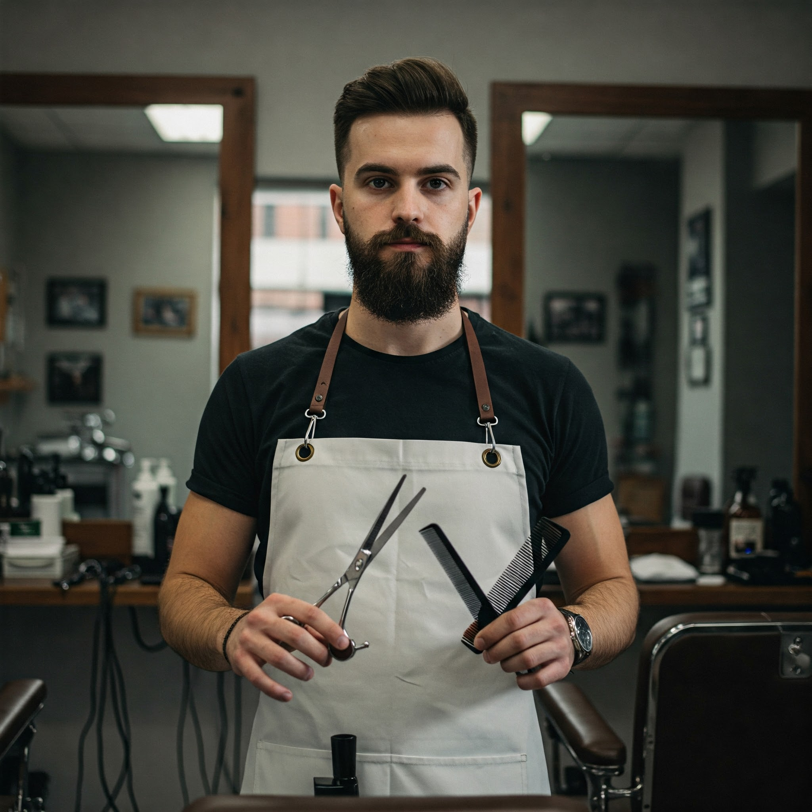
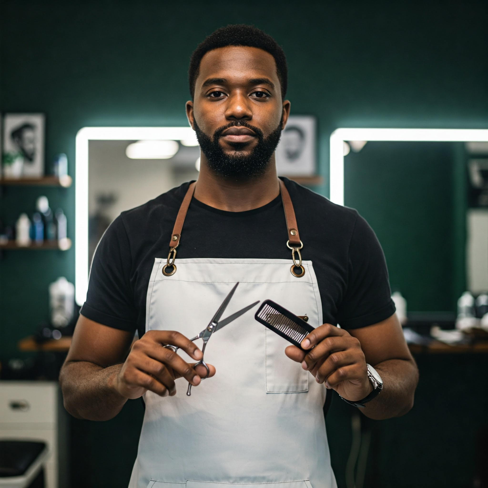
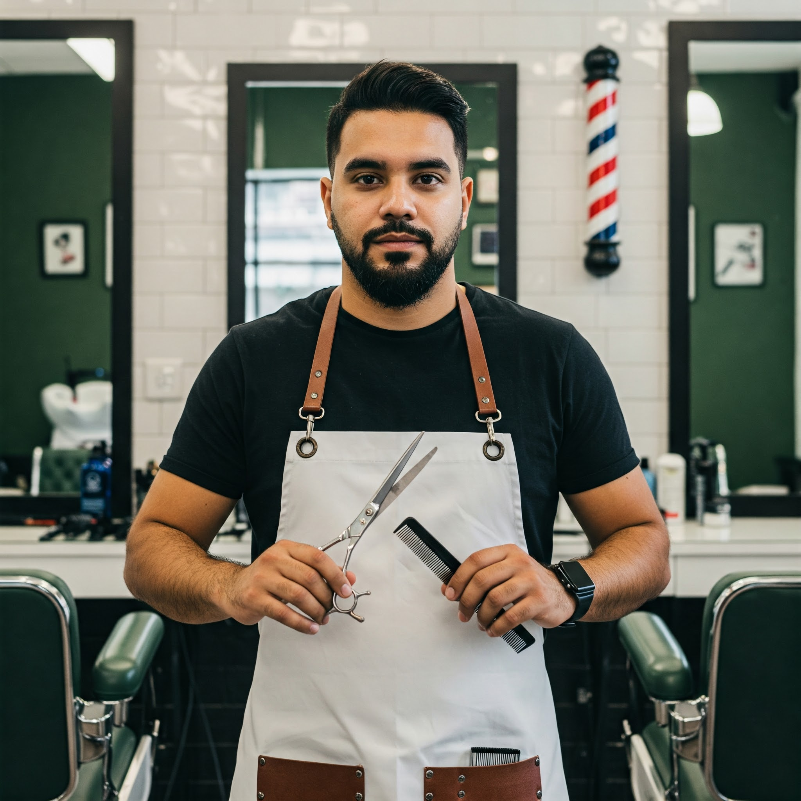

En el año 2020, tres barberos con una pasión compartida por el arte del afeitado y el estilismo decidieron unir fuerzas. Así nació Tonsoré, con la idea de ofrecer una experiencia diferente, donde la tradición se encuentra con la modernidad. Pero el camino no fue fácil. Desde el primer día, enfrentaron desafíos, como atraer clientes en un mercado competitivo. Sin embargo, su dedicación y talento pronto comenzaron a destacar.
SOBRE NOSOTROS
La calidad y el compromiso de los fundadores hicieron que Tonsoré ganara notoriedad rápidamente. Sin embargo, un gran obstáculo llegó cuando una falla eléctrica en el primer local obligó a cerrar por varios días. Sin perder el ánimo, los socios aprovecharon la crisis para mejorar el espacio y reforzar su identidad. Con cada corte y cada afeitado, consolidaron su reputación como una barbería que no solo ofrecía un servicio, sino una experiencia.

El esfuerzo valió la pena. La demanda creció y el pequeño local ya no podía recibir a todos los clientes que querían formar parte del mundo Tonsoré. Así, los socios tomaron una decisión clave: mudarse a un espacio más amplio en la Avenida Carlos Lecueder N° 434, el lugar donde hoy se define el estilo con precisión y carácter. Más que una barbería, Tonsoré se convirtió en un símbolo de dedicación, evolución y excelencia.
MISIÓN Y VISIÓN
Misión
"Brindar una experiencia de barbería única, combinando tradición, técnica y estilo. En Tonsoré, cada corte y afeitado es un arte, diseñado para resaltar la personalidad y confianza de nuestros clientes."
Visión
"Ser el referente en el mundo de la barbería, expandiendo nuestro concepto de excelencia y atención personalizada. Tonsoré busca evolucionar constantemente, manteniendo el equilibrio entre innovación y la esencia del oficio."
NUESTRO EQUIPO

Santiago Torres (El maestro de los detalles)
Santiago descubrió su pasión por la barbería a los 18 años, cuando comenzó a trabajar como aprendiz en una barbería clásica de Montevideo. Perfeccionó su técnica en la Academia de Estilismo Profesional y, con el tiempo, se especializó en cortes de precisión y perfilado de barba. Antes de fundar Tonsoré, trabajó en algunos de los mejores salones de la ciudad, donde desarrolló su meticuloso enfoque hacia el detalle.

Matías Rojas (El creativo del grupo)
Con una inclinación natural hacia el diseño y el estilo, Matías siempre buscó innovar en cada corte. Se formó en el Instituto de Estética Masculina y trabajó en barberías modernas que combinaban técnicas clásicas con tendencias actuales. Su creatividad le permitió desarrollar un enfoque único en la personalización de estilos, convirtiéndolo en el referente para quienes buscan transformar su imagen con confianza.

Leonardo Martins (El especialista en afeitado y cuidado)
Leonardo comenzó su carrera en una tradicional barbería familiar en Artigas, donde aprendió la importancia de la atención al detalle y la experiencia del cliente. Se certificó en técnicas avanzadas de afeitado en una academia de renombre y pasó años perfeccionando el arte del tratamiento facial y el cuidado masculino. Antes de crear Tonsoré, trabajó en diferentes ciudades, llevando su habilidad y conocimiento a cada cliente que atendía.